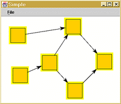

Class: SimpleTutorial
This is the most basic tutorial. It pops up an empty graph editing window. Control-click to add nodes, select a node and control-drag between nodes to create new edges. This demonstrates the graph package facade; other tutorials allow you to customize its behavior.
TutorialWindow f = new TutorialWindow("Simple");
f.getContentPane().add("Center", new JGraph());
f.setSize(800, 600);
f.setVisible(true);